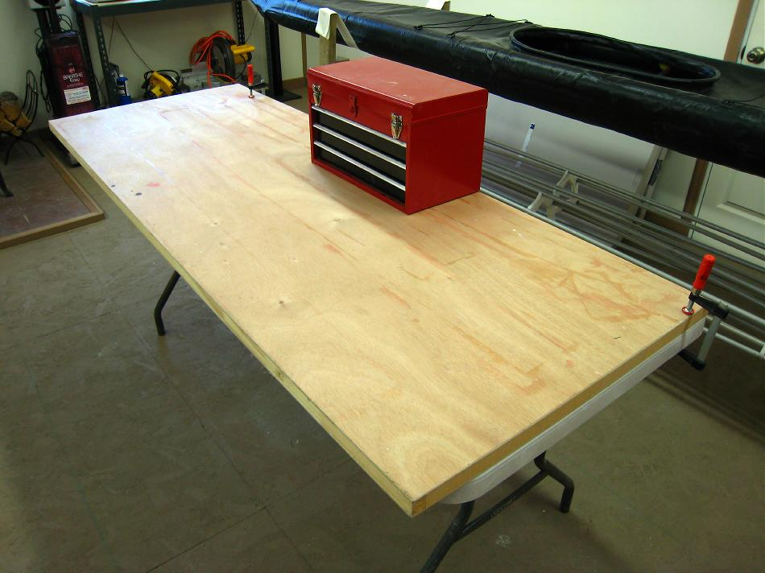

| Stringers | Menu Previous Page Next Page |
|

The setup shown above was used for ripping the 10ft redwood boards used for stringers on the Sea Bee. As a base, I clamped an old door (formerly a work table) atop one of the many folding tables I use in my shop. The tool box adds weight and stability to this arrangement. If the boards had been full length, 2 folding tables would have been used. An alternative is to use 2 or three sawhorses, as seen later, with the boards screwed to them.
|
|